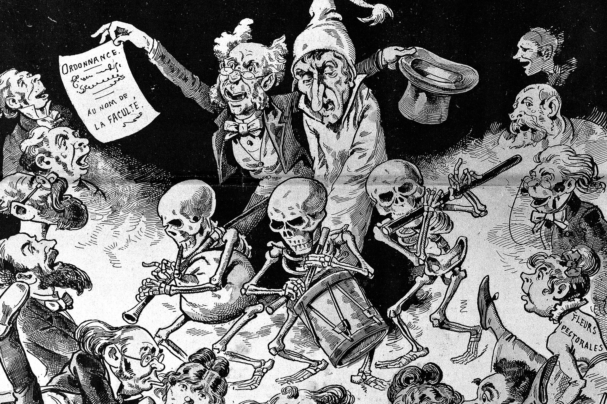

indice:v
Gripe Rusa
La pandemia de gripe de 1889-1890, también conocida como gripe rusa, fue una pandemia de gripe que tuvo lugar entre octubre de 1889 y diciembre de 1890, con reapariciones en marzo-junio de 1891, noviembre de 1891-junio de 1892, la primavera de 1893 y el invierno de 1893-1894. La pandemia infectó a más de 25 millones de personas y causó la muerte de alrededor de un millón de personas en todo el mundo, lo que la convierte en una de las pandemias más mortíferas de la historia.

tipo de virus
Por eso debe seguir mutando para evitar ser destruido", le dijo a la BBC David Morens, del Instituto Nacional de Alergias y Enfermedades Infecciosas (NIAID) de los Institutos Nacionales de Salud (NIH) de EE.UU.
Las pandemias —como la "gripe rusa" o la actual covid-19— ocurren cuando surge una cepa diferente con nuevos genes de un virus animal que "pasa" a las personas.
video relacionado al tema